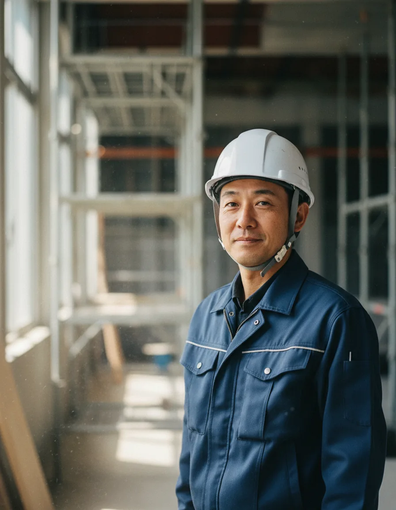

解体・アスベスト除去・塗装 ──
建物の最後の一日から、次の街の最初の一日まで。
日和建設は、その節目に、誠実な仕事をお届けします。
日和建設の理念は「平和」── 騙し合い、いじめ、環境破壊、迷惑のない平和な事業をめざしています。2017年の外壁・塗装事業から始まり、解体・アスベスト除去まで、建物の一生に幅広く関わってきました。
塗装で始まり、解体・アスベスト除去まで。外壁を読む眼と、近隣を歩く足が、私たちの土台です。
建築リフォームと同時に解体工事業を自社で請け負っております。近隣への挨拶はもちろん、町を汚さないよう、環境への配慮を忘れずに作業を行うよう、職人全員に指導をしております。
解体工事の詳細へアスベスト対策を重要な社会問題と捉え、適正な除去・処理を行うとともに、大気汚染防止に努め、環境保全に貢献していきます。作業に従事する従業員と家族の健康を守るため、安全な作業環境作りも行っています。
アスベスト除去の詳細へ塗装の技術だけではなく、外壁の知識も磨き上げようと常に前向きに作業を行っております。日和建設 外壁診断のプロによる診断を、ぜひ一度お試しください。
塗装・外壁工事の詳細へ